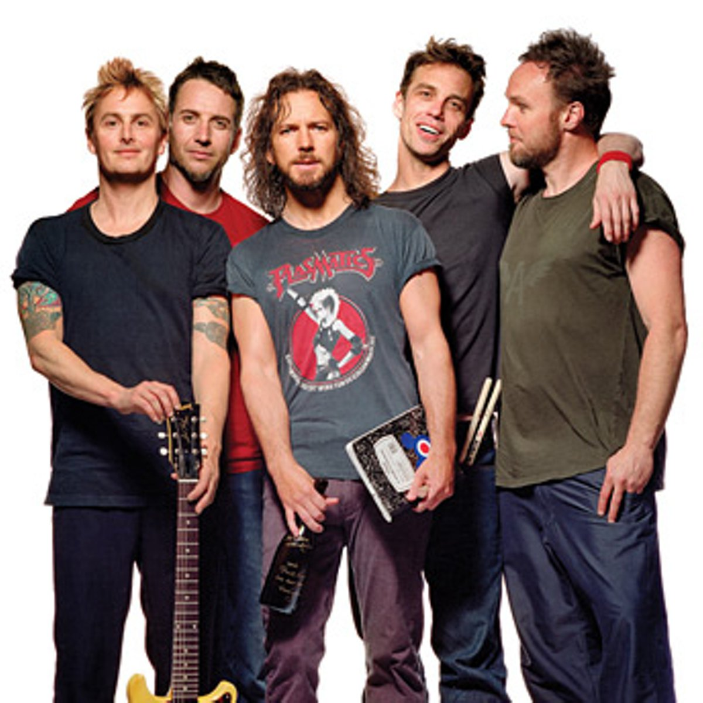
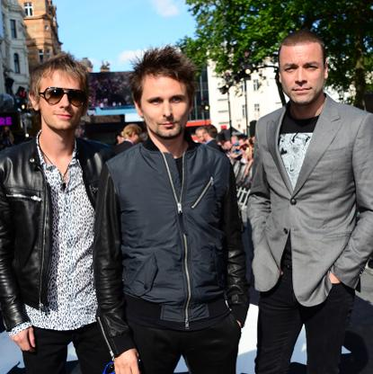

Foo Fighters
Dave Grohl falou sobre as críticas de que o FOO FIGHTERS sempre manteve o mesmo tipo de som, em entrevista para a revista British Airways' High Life.

Pearl Jam
Stone Gossard, guitarrista do PEARL JAM, revelou em entrevista para a rádio KISW, por quê ele está nervoso com a venda dos ingressos para os próximos shows da banda em Seattle.

Muse
Matt Bellamy, vocalista do Muse, divulgou em sua conta do Instagram um vídeo de Dominic Howard em estúdio.